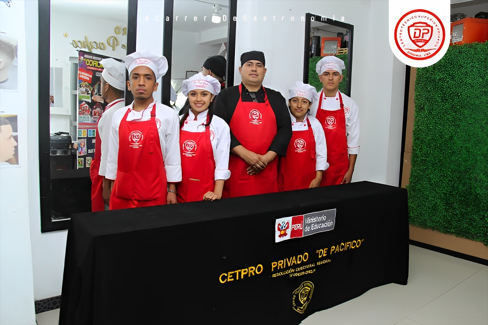

| Módulo I | Módulo II | Módulo III |
|---|---|---|
| Técnicas Culinarias | Cocina Costa | Pescado y Mariscos |
| Cocina Sierra | Cocina Latinoamericana | Cocina Italiana |
| Cocina Selva | Pastelería Básica | Cocina Francesa |
| Manipulación de Alimentos | Inglés Culinario I | Etiqueta y Protocolo |
| Inglés Culinario II | Técnicas de Comedor | Logística y Compras |
| Inglés Culinario III | Enología y Cata de Vino | Costos y Presupuestos |
| 4 Meses | 4 Meses | 4 Meses |
| Módulo IV | Módulo V | Módulo VI | |||
|---|---|---|---|---|---|
| Cocina Española | Cocina Oriental | Tallados y Decoraciones en Verduras y Frutas | |||
| Técnicas Intermedias | Cocina Mediterránea | Organización de Buffet, Banquetes y Catering | |||
| Administración de Alimentos y Bebidas | Cocina Platos Fríos y Fast Food | Montaje de Mesas y Decoración de Ambientes | |||
| Técnicas Avanzadas | Control de Calidad | Elaboración de Proyectos Gastronómicos | |||
| Bromatología e Higiene Alimentaria | Francés Culinario I | Plan de Negocios | |||
| Historia y Geografía de la Gastronomía | Francés Culinario II | Marketing Gastronómico | |||
| 4 Meses | 4 Meses | 4 Meses | |||
| Duración total: 24 Meses | |||||
Ventajas
- Certificados progresivos a nombre de Del Pacifico
- Certificado a nombre del ministerio de educación con valor oficial
- Constancia de prácticas a nombre del DDP
- Certificaciones de las diferentes capacitaciones y seminarios realizados.
Convenios
- Municipalidades, Empresas e Instituciones Públicas y Privadas, Ugel, etc
- Trabajo seguro.
- 